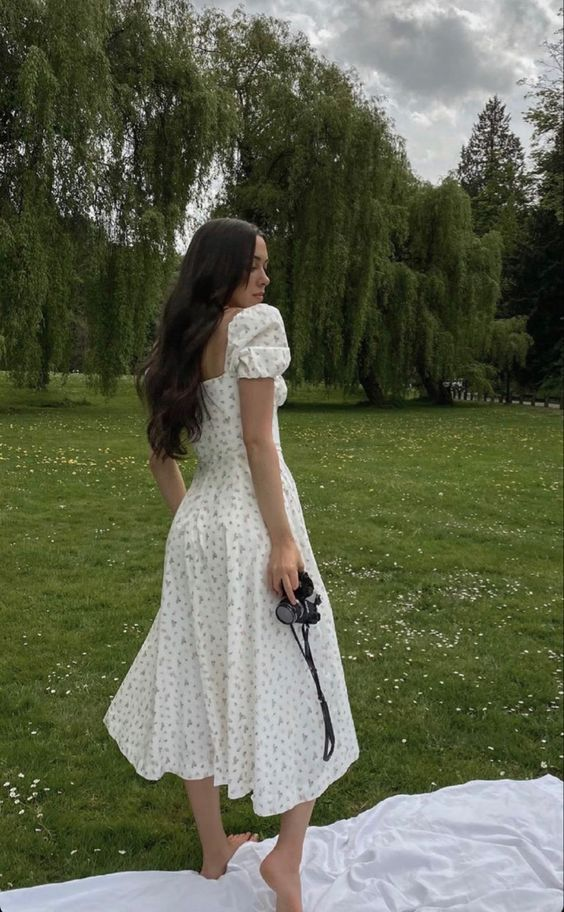

Româtica
Româtica
Româtica

Româtica


Peças de renda: Vestidos, blusas e saias de renda são a escolha perfeita para um look romântico. A renda é um tecido delicado e feminino, que traz um toque de elegância ao visual.
Estampas florais: Estampas florais são um clássico do estilo romântico. Opte por peças com flores pequenas e delicadas, em tons suaves como rosa, lilás e azul.Saias e vestidos fluidos: Saias e vestidos com tecidos fluidos, como o chiffon, são ideais para um visual romântico. Eles são confortáveis e elegantes ao mesmo tempo.
Acessórios delicados: Acessórios delicados, como brincos e colares com pingentes pequenos, trazem um toque final ao look romântico. Opte por acessórios em tons suaves e com detalhes em renda ou pérolas.Maquiagem suave: Para um visual romântico, uma maquiagem suave é a escolha ideal. Opte por tons suaves de sombra, blush e batom, que complementam o tom suave das roupas.
Penteado delicado: Um penteado delicado, como um coque baixo ou um cabelo solto com cachos leves, é a escolha certa para um look romântico.
Tons pastel: Tons pastel são uma escolha certa para um look romântico. Cores como rosa, azul e lilás trazem um ar suave e delicado ao visual.